Le but de Spaceward Ho! est de conquérir la galaxie.
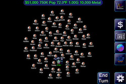
Lorsque vous démarrez une nouvelle partie, nous venons de recommander cliquant sur le bouton Démarrer et en laissant les paramètres par défaut comme initialement prévus. Les valeurs par défaut incluent un système de home prospère. Plus tard, vous pouvez ajuster la forme de la galaxie, ou la taille, ou même combien d'adversaires vous êtes en compétition contre.
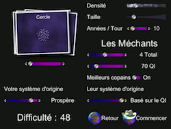
Les planètes que vous avez colonisés sont représentés par un chapeau blanc. Toute planète qui possède des navires autour d'elle auront des points bleus représentent les navires. Pour sélectionner une planète suffit de taper sur elle.
Vous pouvez choisir de démarrer sur un seul, merveilleux, planète peuplée. Vous venez devenir capable de construire vos premiers vaisseaux spatiaux interstellaires. La planète peut commencer avec des navires scouts et un vaisseau de colonisation, mais vous pouvez toujours construire plus de navires en double-cliquant sur la planète.
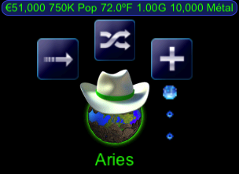
Il ya beaucoup de planètes inexplorées de la galaxie.

Envoyez vos navires au large de scouts aux planètes à découvrir les systèmes stellaires. Faites glisser le nom du navire à la planète que vous souhaitez explorer. Si vous ne souhaitez pas d'envoyer un navire, faites-le glisser vers sa planète d'origine.
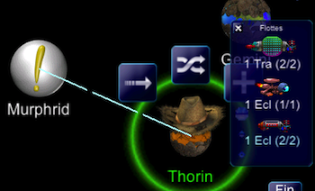
Lorsque vous avez terminé d'envoyer votre navires, vous devez appuyer sur le bouton de fin de tour. Cela signifie que vous avez fait tout ce que vous voulez pour le tour
Certains systèmes d'étoiles sera plus habitable que les autres. Le plus proche de la gravité de la planète est de 1,00 g, mieux c'est! Si la température est loin de 72F, ne vous inquiétez pas - vous pouvez toujours terraformer la planète pour correspondre à la meilleure température. Chaque planète possède également des quantités différentes de métal. Le métal est utilisé pour construire de nouveaux navires. Une fois que vous trouver une planète qui est semblable à votre planète d'origine, vous construisez un vaisseau de colonisation et aller le coloniser.
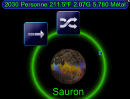
Une fois là, vous faites sa température mieux en le terraformation, la mienne tout le métal de lui, et ensuite l'utiliser comme une base pour une exploration plus poussée et de la colonisation. Utilisez le curseur sur le côté gauche de la planète à s'adapter aux plus terraformation (partie supérieure du curseur) pour les mines de métaux (partie inférieure du curseur). Le curseur disparaît si on n'est plus un choix entre les deux. Après plusieurs siècles la population de la nouvelle planète va croître si grand qu'il va commencer à faire des profits importants, tout comme votre planète d'origine.
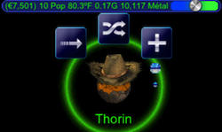
Vous pouvez voir combien de métal et de l'argent que vous avez, en plus combien vous avez économisé en haut à gauche de la barre d'infos
Vous sauter de planète en planète l'expansion de votre empire galactique. Finalement, vous heurter à l'opposition - les méchants qui sont à la conquête de la galaxie, aussi.

Outre l'exploration et la colonisation, vous aurez besoin de vous défendre contre la plus agressive de ces races extraterrestres. Vous pouvez le faire par la construction de satellites de défense à vos colonies. Pour construire des navires et des satellites, soit le double tap sur la colonie où vous souhaitez construire. Cela fera apparaître la boîte de dialogue de construire des navires. Vous pouvez ajuster les armes et de boucliers et d'autres technologies pour les navires, ou vous pouvez maximiser les technologies avec un seul bouton.
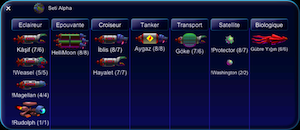
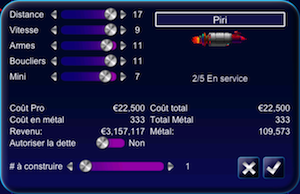
Vous pouvez également vous défendre en construisant des flottes de combattants et de la contre-attaque préventive des étrangers - l'ancienne "meilleure défense c'est l'attaque" stratégie. Une fois que vous envoyez vos combattants hors tension, vous pouvez regarder les résultats de la bataille.
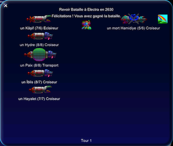
Si le combat n'est pas à votre goût, vous pouvez lier d'amitié avec certains de ces étrangers, la création d'alliés au lieu de ses ennemis. Il suffit de taper sur le nom de l'ennemi pour leur demander de s'allier avec vous. Mais attention, pas tout le monde voudra s'allier.
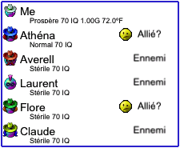
n plus de la construction de navires et de terraformation et d'extraction minière planètes, vous dépenser de l'argent sur la recherche technologique. Les premiers navires que vous construisez peuvent voyager vers d'autres étoiles, mais ils sont grands, lent, maladroit, et faible. Lorsque vous dépenser de l'argent sur la recherche, vos niveaux de technologie de navires va s'améliorer. À la surprise de personne, les meilleurs navires vont détruire celles qui sont désuètes dans la bataille. Pour régler le argent que vous dépensez sur une technologie, il suffit de toucher et faire glisser pour ajuster combien vous avez dépensé.
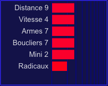
Vous avez un total de 100% à dépenser et les barres représentent le montant que vous dépensez. Gamme permet à vos navires de voyager vers des planètes plus éloignées. Vitesse leur permet de voyager plus vite, et aussi la vitesse supérieure permet aux navires de tirer le premier dans la bataille. Les armes et les boucliers déterminer dans quelle mesure un navire bat dans la bataille. Mini (miniaturisation) vous permet de construire des navires pour les moins de métal, mais plus d'argent. Mini est utile car métallique peut être un rare beaucoup d'argent. Radical vous permet d'avoir une technologie complètement aléatoire qui est en dehors des niveaux normaux de haute technologie.
Vous pouvez également consulter la liste entière des planètes que vous avez colonisés. Vous pouvez taper sur un pour le voir dans la galaxie. Vous pouvez également ajuster la quantité d'argent que vous dépensez sur la planète. Ou, combien vous dépensez sur les technologies ou remettre en vos économies.
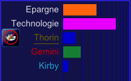
Parfois, vous voudrez peut-être revenir en arrière et voir ce qui s'est passé dans le passé, il suffit de cliquer sur l'onglet Historique. Vous pouvez faire défiler les articles. Pour examiner un seul élément, il suffit de taper sur.
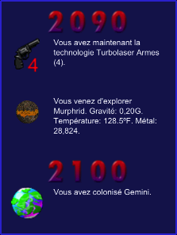
Lorsque vous tuez tous les ennemis des colonies, vous gagnez. Vous êtes libre de continuer à jouer, mais il n'y aura pas de résistance contre les méchants, car ils sont morts.
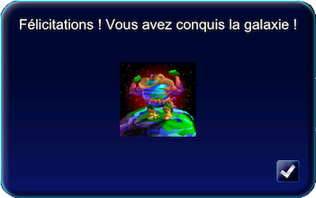
Cela vous donne juste une brève introduction à la lecture Spaceward Ho! Vous pouvez trouver plus d'informations et plus de détails sur la lecture de Spaceward Ho! En visitant notre site Web, Ariton.com